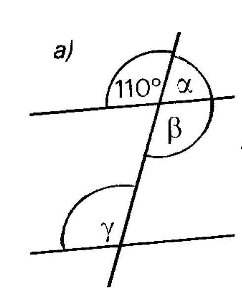
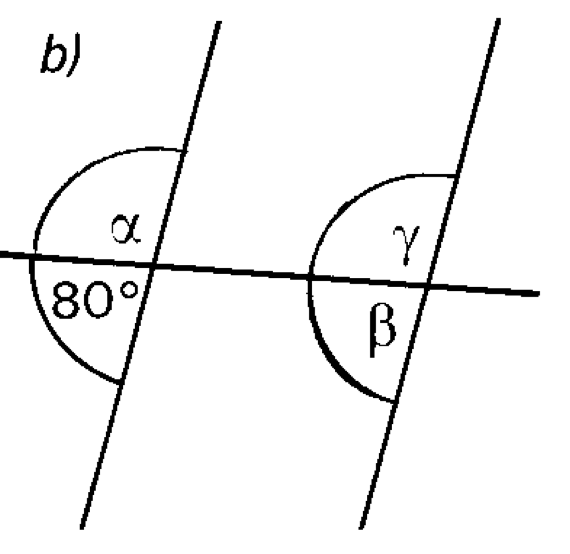
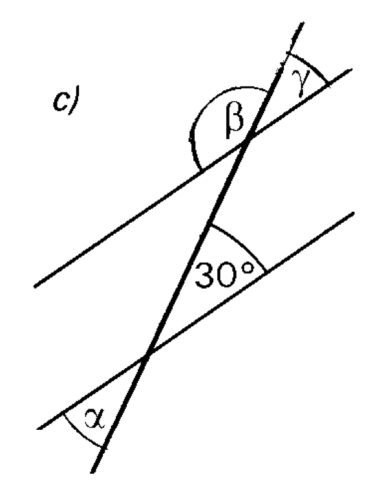
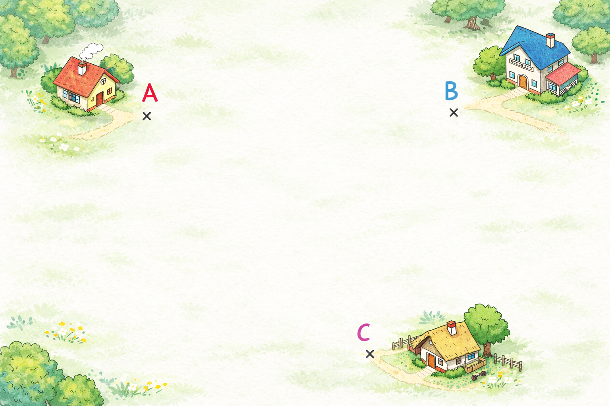

a)
Gesucht: alpha, beta, gamma
Mathe 8 · Berichtigung · Klassenarbeit 3
Dieser Assistent gibt keine fertigen Loesungen aus. Er hilft mit Regeln, Denkanstoessen und Schrittfolgen. Wenn du ein Ergebnis eingibst, bekommst du direkt Rueckmeldung.
Aufgabe 1
Erst den passenden Winkelsatz waehlen, dann die Winkelgroesse eingeben. So trainierst du die Begruendung und nicht das Ablesen.

Gesucht: alpha, beta, gamma

Gesucht: alpha, beta, gamma

Gesucht: alpha, beta, gamma
Aufgabe 2
Trage die zwei gegebenen Winkel aus deinem Blatt ein und dann dein berechnetes Ergebnis. Der Assistent sagt dir nur, ob deine Rechnung stimmt.
Aufgabe 3
Gib eine Prozentzahl, den passenden Bruch und die Dezimalzahl ein. Der Assistent prueft, ob alles zueinander passt.
Aufgaben 4, 7 und 8
Rechne selbst. Der Assistent bestaetigt oder bremst dich und gibt hoechstens einen Rechenhinweis.
Kapital 200 Euro, Zinssatz 11 Prozent
Kapital 500 Euro, Zinssatz 3 Prozent
Kapital 250 Euro, Zinssatz 5 Prozent
850 Euro, 2 Prozent, Spiel kostet 79 Euro
550 Euro werden nach 1 Jahr zu 594 Euro.
Nutze denselben Zinssatz weiter. Jahr 0 = 550,00 Euro. Jahr 1 = 594,00 Euro.
Aufgaben 5 und 6
Hier gibt es absichtlich keine Endzeichnung. Du bekommst nur den naechsten sauberen Konstruktionsschritt.
SSS mit a = b = c = 10 cm
c = 7 cm, b = 10 cm, dazu der in der Arbeit angegebene Winkel

Spielplatz-Aufgabe mit A, B und C